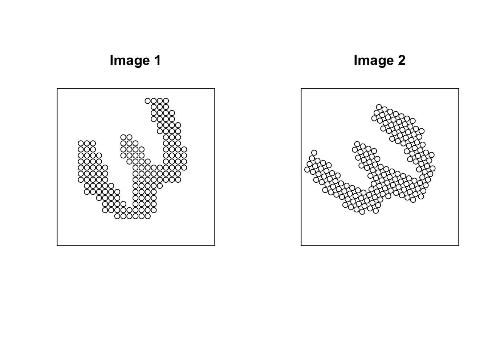

Orthogonal Procrustes Matching and von Neumann Trace Inequality
Geometric
\[ \newcommand{\bbR}{\mathbb{R}} \newcommand{\calD}{\mathcal{D}} \newcommand{\calM}{\mathcal{M}} \newcommand{\calP}{\mathcal{P}} \DeclareMathOperator{\argmin}{argmin} \]
Let’s start the post with two images as below.
Do they look similar? These are images of quantized samples from digit 3 of the MNIST dataset. Although they look different with similar shapes, they are actually the same up to an orthogonal transformation because it is how I generated Image 2 from Image 1.
1 Introduction
One of the cornerstone problems in multivariate statistics, data alignment, and shape matching is the Orthogonal Procrustes Problem. Given two matrices, \(A\in \mathbb{R}^{m\times n}\) and \(B\in \mathbb{R}^{m\times n}\), which represent two sets of corresponding points or configurations in \(\mathbb{R}^n\), the goal is to find the optimal rotation (and possibly reflection) that aligns \(B\) to \(A\). This is mathematically framed as minimizing the distance between the two configurations after \(B\) is transformed by an orthogonal matrix \(R\). To put it mathematically, the orthogonal Procrustes problem can be formulated as the following minimization problem: \[\begin{equation*} \underset{R\in \mathcal{O}(n)}{\min}~\|A-BR\|_F^2, \end{equation*}\] where \(\|\cdot\|_F\) is the standard Frobenius norm and \(\mathcal{O}(n) = \lbrace R\in \mathbb{R}^{n\times n} : R^T R = I_n \rbrace\) is the orthogonal group of degree \(n\).
2 The von Neumann Trace Inequality
Let \(C\) and \(D\) be \(n \times n\) real matrices. Let \(\sigma_1(C) \ge \dots \ge \sigma_n(C)\) and \(\sigma_1(D) \ge \dots \ge \sigma_n(D)\) be their ordered singular values. The inequality states that:\[|\textrm{tr}(C D)| \le \sum_{i=1}^{n} \sigma_i(C) \sigma_i(D),\] which is known as the von Neumann trace inequality. The most relevant aspect for the Procrustes problem is the condition for equality. Equality holds if and only if the matrices \(C\) and \(D^T\) have a simultaneous Singular Value Decomposition (SVD), meaning they share the same right and left singular vector bases (up to scaling and orientation).
3 Transforming the Procrustes Problem
While the optimization problem is minimizing a Frobenius norm, we can transform it into an equivalent trace maximization problem. Let’s start by squaring the objective function, which does not change the location of the minimum: \[\begin{equation*} \|A-BR\|_F^2 = \textrm{tr}((A-BR)^T (A-BR)). \end{equation*}\] Expanding the term inside the trace yields \[\begin{equation*} \|A - B R\|_F^2 = \textrm{tr}(A^T A - R^T B^T A - A^T B R + R^T B^T B R). \end{equation*}\] Using the properties of the trace, namely \(\textrm{tr}(M^T) = \textrm{tr}(M)\) and \(\textrm{tr}(M_1 M_2) = \textrm{tr}(M_2 M_1)\) (cyclic permutation), and the orthogonality of \(R\) such that \(R^T R = I\), we have \[\begin{gather*} \textrm{tr}(R^T B^T B R) = \textrm{tr}(B^T B R R^T) = \textrm{tr}(B^T B),\\ \textrm{tr}(R^T B^T A) = \textrm{tr}((R^T B^T A)^T) = \textrm{tr}(A^T B R). \end{gather*}\] Substituting these back into the expression gives \[\begin{equation*} \|A-BR\|_F^2 = \underbrace{\textrm{tr}(A^T A) + \textrm{tr}(B^T B)}_{\text{Constant with respect to } R} - 2 \textrm{tr}(A^T B R). \end{equation*}\] Since the two terms in the front are constant, minimizing \(\|A-BR\|_F^2\) is equivalent to maximizing the term \(\textrm{tr}(A^T B R)\) with respect to \(R\).
4 The Solution via SVD
Our objective is not to maximize \(\textrm{tr}(A^T B R)\) over \(R \in \mathcal{O}(n)\). For notational simplicity, let \(M = A^T B\) and compute the SVD of the matrix \(M\): \[\begin{equation*} M := U\Sigma V^\top, \end{equation*}\] where \(U, V \in \mathcal{O}(n)\) are the orthogonal matrices of left and right singular vectors, and \(\Sigma\) is the diagonal matrix of singular values. Substituting the SVD of \(M\) into the trace expression gives \[\begin{equation*} \textrm{tr}(MR) = \textrm{tr}(U \Sigma V^T R) = \textrm{tr}(\Sigma V^T R U). \end{equation*}\]
Let \(Z = V^T R U\). Since \(V\), \(R\), and \(U\) are all orthogonal, their product \(Z\) must also be an orthogonal matrix. The problem is now to maximize \(\textrm{tr}(\Sigma Z)\) over all orthogonal \(Z\): \[\begin{equation*} \textrm{tr}(\Sigma Z) = \sum_{i=1}^n \sigma_i Z_{ii}. \end{equation*}\]
Since \(\Sigma\) is a doagonal matrix with non-negative entries \(\sigma_i \ge 0\) and \(Z\) is orthogonal, the elements of \(Z\) should satisfy \(|Z_{ij}| \le 1\). The von Neumann trace inequality guarantees that the maximum of this sum is achieved when \(Z\) is the identity matrix, i.e., \(Z_{ii} = 1\) for all \(i\)’s. Any other orthogonal matrix \(Z\) would result in a strictly smaller trace sum unless \(M\) is a constant multiple of the identity. Hence, setting \(Z=I\) for the maximum, i.e., \(V^T R U = I\), we can solve for \(R\): \[\begin{equation*} R = V U^T. \end{equation*}\] This \(R\) is the unique optimal alignment that solves the orthogonal Procrustes problem that matches \(B\) to \(A\) in the least-squares sense.
Citation
BibTeX citation:
@online{you2025,
author = {You, Kisung},
title = {Orthogonal {Procrustes} {Matching} and von {Neumann} {Trace}
{Inequality}},
date = {2025-11-19},
url = {https://kisungyou.com/Blog/blog_005_OrthogonalProcrustes.html},
langid = {en}
}
For attribution, please cite this work as:
You, Kisung. 2025. “Orthogonal Procrustes Matching and von Neumann
Trace Inequality.” November 19, 2025. https://kisungyou.com/Blog/blog_005_OrthogonalProcrustes.html.